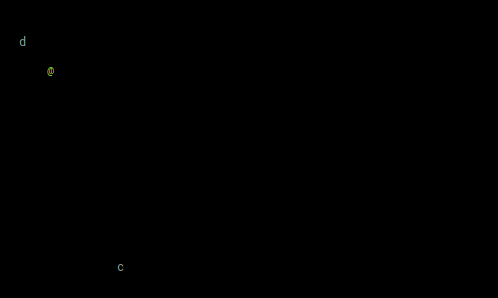

Apecs
Overview
Apecs is a haskell entity component system. For an overview of what and ECS is see
In short, there are
- Entities: Represent a thing in your world/app. However an entity is just an id. E.g. the
playerentity - Components: You can think of these as entity attributes. These are ideally pure data and small. E.g. a
positioncomponent for anything that can have a position - Systems: Peforms the actions. E.g.
movementordrawingsystems
Below are six examples of very basic apecs usage. Each examples builds on the last. The diffs between each version are given in full below so you can easily see what was added.
Example 1 - Getting started
The first example draws to the terminal using the ansi-terminal package and allows you to move the character @ around the screen using the HJKL keys.

LANGUAGE
Apecs requires several language extensions esp when using template haskell to generate the world (see below).
src/Lib01.hs (2 to 10)
{-# LANGUAGE NoImplicitPrelude #-}
{-# LANGUAGE FlexibleInstances #-}
{-# LANGUAGE MultiParamTypeClasses #-}
{-# LANGUAGE OverloadedStrings #-}
{-# LANGUAGE ScopedTypeVariables #-}
{-# LANGUAGE TemplateHaskell #-}
{-# LANGUAGE TypeFamilies #-}
{-# LANGUAGE LambdaCase #-}
{-# LANGUAGE TypeApplications #-}Imports
I’m using protolude as a prelude replacement. Other than than you’ll need apecs obviously, linear for vectors and anti-term for terminal drawing.
src/Lib01.hs (21 to 25)
import Protolude
import Apecs as Ap
import Linear ( V2(..) )
import qualified System.Console.ANSI as A
import qualified System.IO as IOComponents
- Position: For entities that can have a position in the grid
- Tile: For visible entities - the tile to draw
- Pet: A “pet”
- Player: The player
src/Lib01.hs (30 to 41)
newtype Position = Position (V2 Int) deriving Show
instance Component Position where type Storage Position = Ap.Map Position
data Tile = Tile Char [A.SGR] deriving Show
instance Component Tile where type Storage Tile = Ap.Map Tile
data Pet = Pet
instance Component Pet where type Storage Pet = Ap.Map Pet
data Player = Player
instance Component Player where type Storage Player = Unique PlayerFor each component there needs to be a Storage instance that tells apecs how to manage the component. Most components will use Map e.g.
instance Component Position where type Storage Position = Ap.Map Position
Since there is only a single player, we can tell apecs to make it Uniqie
instance Component Player where type Storage Player = Unique Player
World
The makeWorld template haskell call generates all the helper types for us
src/Lib01.hs (46 to 46)
Ap.makeWorld "World" [''Position, ''Pet, ''Player, ''Tile]Creating entities
In initialise the entities are created. Here two pets and the player are created
src/Lib01.hs (63 to 67)
initialise :: System World ()
initialise = do
void $ Ap.newEntity (Position (V2 20 17), Pet, Tile 'c' [])
void $ Ap.newEntity (Position (V2 5 3), Pet, Tile 'd' [])
void $ Ap.newEntity (Position 7, Player, Tile '@' [A.SetColor A.Foreground A.Vivid A.Green])Start
———————————– here
src/Lib01.hs (51 to 58)
start :: IO ()
start = do
IO.hSetEcho stdin False
IO.hSetBuffering stdin IO.NoBuffering
IO.hSetBuffering stdout IO.NoBuffering
w <- initWorld
Ap.runSystem initialise w
runGame wRun Game
src/Lib01.hs (72 to 108)
runGame :: World -> IO ()
runGame world = do
A.hideCursor
go
A.setSGR [A.Reset]
A.clearScreen
A.showCursor
where
go :: IO ()
go = do
A.setSGR [A.Reset]
A.clearScreen
A.setCursorPosition 0 0
Ap.runSystem systemDraw world
(stop, move) <-
liftIO getKey >>= \case
"q" -> pure (True, Nothing)
"k" -> pure (False, Just (-1, 0)) -- "Move:up"
"j" -> pure (False, Just (1, 0)) -- "Move:down"
"l" -> pure (False, Just (0, 1)) -- "Move:right"
"h" -> pure (False, Just (0, -1)) -- "Move:left"
_ -> pure (False, Just (0, 0))
if not stop
then do
case move of
Nothing -> pass
Just (dx, dy) ->
-- Move the player
Ap.runSystem (systemMovePlayer dx dy) world
go
else
passSystems
src/Lib01.hs (113 to 128)
systemDraw :: System World ()
systemDraw =
cmapM_ $ \(Position p, t@Tile {}) -> liftIO $ drawEntity p t
systemMovePlayer :: Int -> Int -> System World ()
systemMovePlayer dx dy =
cmap $ \(Position p, Player) -> Position (p + V2 dx dy)
drawEntity :: V2 Int -> Tile -> IO ()
drawEntity (V2 x y) (Tile t a) = do
A.setCursorPosition x y
A.setSGR [A.Reset]
A.setSGR a
putStr [t]Get Key
src/Lib01.hs (133 to 139)
-- | https://stackoverflow.com/questions/23068218/haskell-read-raw-keyboard-input
getKey :: IO [Char]
getKey = reverse <$> getKey' ""
where getKey' chars = do
char <- IO.getChar
more <- IO.hReady stdin
(if more then getKey' else return) (char:chars)Diffs
Changes from 01 to 02
Lib01.hs
--- src/Lib01.hs
+++ src/Lib02.hs
@@ -1,5 +1,6 @@
{-# LANGUAGE NoImplicitPrelude #-}
{-# LANGUAGE FlexibleInstances #-}
+{-# LANGUAGE FlexibleContexts #-}
{-# LANGUAGE MultiParamTypeClasses #-}
{-# LANGUAGE OverloadedStrings #-}
{-# LANGUAGE ScopedTypeVariables #-}
@@ -9,9 +10,9 @@
{-# LANGUAGE TypeApplications #-}
{-
- Simple apecs example
+ Same as 01 but the Pet components move towards the player on each move
-}
-module Lib01
+module Lib02
( someFunc
) where
@@ -21,7 +22,7 @@
import qualified System.Console.ANSI as A
import qualified System.IO as IO
-newtype Position = Position (V2 Int) deriving Show
+newtype Position = Position (V2 Double) deriving Show
instance Component Position where type Storage Position = Ap.Map Position
data Tile = Tile Char [A.SGR] deriving Show
@@ -44,19 +45,19 @@
IO.hSetBuffering stdin IO.NoBuffering
IO.hSetBuffering stdout IO.NoBuffering
w <- initWorld
- Ap.runSystem initialise w
- runGame w
+ playerE <- Ap.runSystem initialise w
+ runGame playerE w
-initialise :: System World ()
+initialise :: System World Ap.Entity
initialise = do
void $ Ap.newEntity (Position (V2 20 17), Pet, Tile 'c' [])
void $ Ap.newEntity (Position (V2 5 3), Pet, Tile 'd' [])
- void $ Ap.newEntity (Position 7, Player, Tile '@' [A.SetColor A.Foreground A.Vivid A.Green])
+ Ap.newEntity (Position 7, Player, Tile '@' [A.SetColor A.Foreground A.Vivid A.Green])
-runGame :: World -> IO ()
-runGame world = do
+runGame :: Entity -> World -> IO ()
+runGame playerE world = do
A.hideCursor
go
@@ -74,7 +75,7 @@
Ap.runSystem systemDraw world
(stop, move) <-
- liftIO getKey >>= \case
+ (liftIO getKey) >>= \case
"q" -> pure (True, Nothing)
"k" -> pure (False, Just (-1, 0)) -- "Move:up"
"j" -> pure (False, Just (1, 0)) -- "Move:down"
@@ -86,9 +87,13 @@
then do
case move of
Nothing -> pass
- Just (dx, dy) ->
+ Just (dx, dy) -> do
-- Move the player
Ap.runSystem (systemMovePlayer dx dy) world
+
+ -- Move the pets
+ Ap.runSystem (systemMovePets playerE) world
+
go
else
pass
@@ -99,14 +104,33 @@
cmapM_ $ \(Position p, t@Tile {}) -> liftIO $ drawEntity p t
-systemMovePlayer :: Int -> Int -> System World ()
+systemMovePlayer :: Double -> Double -> System World ()
systemMovePlayer dx dy =
cmap $ \(Position p, Player) -> Position (p + V2 dx dy)
-drawEntity :: V2 Int -> Tile -> IO ()
+systemMovePets :: Entity -> System World ()
+systemMovePets playerE = do
+ -- Get the updated player position)
+ (Player, Position (V2 px py)) <- Ap.get playerE
+
+ -- Move each of the Pets
+ cmap $ \(Position (V2 x y), Pet) -> do
+ let
+ x' = case compare px x of
+ EQ -> x
+ GT -> x + 0.2
+ LT -> x - 0.2
+ y' = case compare py y of
+ EQ -> y
+ GT -> y + 0.2
+ LT -> y - 0.2
+ Position (V2 x' y')
+
+
+drawEntity :: V2 Double -> Tile -> IO ()
drawEntity (V2 x y) (Tile t a) = do
- A.setCursorPosition x y
+ A.setCursorPosition (floor x) (floor y)
A.setSGR [A.Reset]
A.setSGR a
putStr [t]
Changes from 02 to 03
Lib02.hs
--- src/Lib02.hs
+++ src/Lib03.hs
@@ -10,15 +10,18 @@
{-# LANGUAGE TypeApplications #-}
{-
- Same as 01 but the Pet components move towards the player on each move
+ Queue for events
+ Key press checking happens in own loop
+ Pet components update on each tick, not very roguelike but e.g. could be used for animation etc that happens between turns
-}
-module Lib02
+module Lib03
( someFunc
) where
import Protolude
import Apecs as Ap
import Linear ( V2(..) )
+import qualified Control.Concurrent.STM.TBMQueue as TBQ
import qualified System.Console.ANSI as A
import qualified System.IO as IO
@@ -38,6 +41,11 @@
Ap.makeWorld "World" [''Position, ''Pet, ''Player, ''Tile]
+data Event
+ = EvtQuit
+ | EvtTick
+ | EvtMovePlayer Double Double
+
someFunc :: IO ()
someFunc = do
@@ -46,7 +54,15 @@
IO.hSetBuffering stdout IO.NoBuffering
w <- initWorld
playerE <- Ap.runSystem initialise w
- runGame playerE w
+ q <- atomically $ TBQ.newTBMQueue 50
+
+ void . forkIO . forever $ do
+ threadDelay 60000
+ atomically $ TBQ.writeTBMQueue q EvtTick
+
+ void . forkIO . forever $ getPlayerKeys q
+
+ runGame q playerE w
initialise :: System World Ap.Entity
@@ -56,8 +72,25 @@
Ap.newEntity (Position 7, Player, Tile '@' [A.SetColor A.Foreground A.Vivid A.Green])
-runGame :: Entity -> World -> IO ()
-runGame playerE world = do
+getPlayerKeys :: TBQ.TBMQueue Event -> IO ()
+getPlayerKeys q = do
+ e' <-
+ getKey >>= \case
+ "q" -> pure . Just $ EvtQuit
+ "k" -> pure . Just $ EvtMovePlayer (-1) 0 -- "Move:up"
+ "j" -> pure . Just $ EvtMovePlayer 1 0 -- "Move:down"
+ "l" -> pure . Just $ EvtMovePlayer 0 1 -- "Move:right"
+ "h" -> pure . Just $ EvtMovePlayer 0 (-1) -- "Move:left"
+ _ -> pure Nothing
+
+ case e' of
+ Nothing -> pass
+ Just e -> atomically . TBQ.writeTBMQueue q $ e
+
+
+
+runGame :: TBQ.TBMQueue Event -> Entity -> World -> IO ()
+runGame q playerE world = do
A.hideCursor
go
@@ -74,29 +107,17 @@
Ap.runSystem systemDraw world
- (stop, move) <-
- (liftIO getKey) >>= \case
- "q" -> pure (True, Nothing)
- "k" -> pure (False, Just (-1, 0)) -- "Move:up"
- "j" -> pure (False, Just (1, 0)) -- "Move:down"
- "l" -> pure (False, Just (0, 1)) -- "Move:right"
- "h" -> pure (False, Just (0, -1)) -- "Move:left"
- _ -> pure (False, Just (0, 0))
-
- if not stop
- then do
- case move of
+ atomically (TBQ.readTBMQueue q) >>= \case
Nothing -> pass
- Just (dx, dy) -> do
+ Just EvtQuit -> pass
+ Just (EvtMovePlayer dx dy) -> do
-- Move the player
Ap.runSystem (systemMovePlayer dx dy) world
+ go
- -- Move the pets
+ Just EvtTick -> do
Ap.runSystem (systemMovePets playerE) world
-
go
- else
- pass
systemDraw :: System World ()
Changes from 03 to 04
Lib03.hs
--- src/Lib03.hs
+++ src/Lib04.hs
@@ -10,11 +10,10 @@
{-# LANGUAGE TypeApplications #-}
{-
- Queue for events
- Key press checking happens in own loop
- Pet components update on each tick, not very roguelike but e.g. could be used for animation etc that happens between turns
+ Cats keep their distance from the dogs
+ Using cfold
-}
-module Lib03
+module Lib04
( someFunc
) where
@@ -31,15 +30,20 @@
data Tile = Tile Char [A.SGR] deriving Show
instance Component Tile where type Storage Tile = Ap.Map Tile
-
data Pet = Pet
instance Component Pet where type Storage Pet = Ap.Map Pet
+data Dog = Dog
+instance Component Dog where type Storage Dog = Ap.Map Dog
+
+data Cat = Cat
+instance Component Cat where type Storage Cat = Ap.Map Cat
+
data Player = Player
instance Component Player where type Storage Player = Unique Player
-Ap.makeWorld "World" [''Position, ''Pet, ''Player, ''Tile]
+Ap.makeWorld "World" [''Position, ''Pet, ''Cat, ''Dog, ''Player, ''Tile]
data Event
= EvtQuit
@@ -67,8 +71,9 @@
initialise :: System World Ap.Entity
initialise = do
- void $ Ap.newEntity (Position (V2 20 17), Pet, Tile 'c' [])
- void $ Ap.newEntity (Position (V2 5 3), Pet, Tile 'd' [])
+ void $ Ap.newEntity (Position (V2 20 17), Pet, Cat, Tile 'c' [])
+ void $ Ap.newEntity (Position (V2 36 7), Pet, Cat, Tile 'c' [])
+ void $ Ap.newEntity (Position (V2 5 3), Pet, Dog, Tile 'd' [])
Ap.newEntity (Position 7, Player, Tile '@' [A.SetColor A.Foreground A.Vivid A.Green])
@@ -117,6 +122,7 @@
Just EvtTick -> do
Ap.runSystem (systemMovePets playerE) world
+ Ap.runSystem systemCatsAvoidDogs world
go
@@ -149,6 +155,41 @@
Position (V2 x' y')
+systemCatsAvoidDogs :: System World ()
+systemCatsAvoidDogs = do
+ -- Get the dogs
+ --dog :: [(Position, Dog)] <- Ap.cfold (flip (:)) mempty
+ dogs <- Ap.cfold (\a (_ :: Dog, Position v) -> v : a) mempty
+
+ -- Cheating as we know there is only one dog. This could be change to avoid the closest one
+ case dogs of
+ [V2 px py] ->
+ -- Move each of the cats to be at least a distance of five (5 ^ 2 = 25) away from the dog
+ cmap $ \(Position (V2 x y), Cat) ->
+ if euclideanDistance2 (px, py) (x, y) < 25
+ then do
+ let
+ x' = case compare px x of
+ EQ -> x
+ GT -> x - 0.4
+ LT -> x + 0.4
+ y' = case compare py y of
+ EQ -> y
+ GT -> y - 0.4
+ LT -> y + 0.4
+ Position (V2 x' y')
+ else
+ Position (V2 x y)
+
+ _ ->
+ pass
+
+
+-- ^ Square of the Euclidean distance between two points
+euclideanDistance2 :: (Double, Double) -> (Double, Double) -> Double
+euclideanDistance2 (ax, ay) (bx, by) = (bx - ax) ^ 2 + (by - ay) ^ 2
+
+
drawEntity :: V2 Double -> Tile -> IO ()
drawEntity (V2 x y) (Tile t a) = do
A.setCursorPosition (floor x) (floor y)
Changes from 04 to 05
/stackoverflow.com/questions/23068218/haskell-read-raw-keyboard-input
--- src/Lib04.hs
+++ src/Lib05.hs
@@ -10,24 +10,22 @@
{-# LANGUAGE TypeApplications #-}
{-
- Cats keep their distance from the dogs
- Using cfold
+ Gloss version of 04
-}
-module Lib04
+module Lib05
( someFunc
) where
import Protolude
import Apecs as Ap
+import qualified Apecs.Gloss as Ag
import Linear ( V2(..) )
-import qualified Control.Concurrent.STM.TBMQueue as TBQ
-import qualified System.Console.ANSI as A
-import qualified System.IO as IO
+import qualified System.Exit as Ex
-newtype Position = Position (V2 Double) deriving Show
+newtype Position = Position (V2 Float) deriving Show
instance Component Position where type Storage Position = Ap.Map Position
-data Tile = Tile Char [A.SGR] deriving Show
+data Tile = Tile Char Ag.Picture deriving Show
instance Component Tile where type Storage Tile = Ap.Map Tile
data Pet = Pet
@@ -43,97 +41,86 @@
instance Component Player where type Storage Player = Unique Player
-Ap.makeWorld "World" [''Position, ''Pet, ''Cat, ''Dog, ''Player, ''Tile]
-
-data Event
- = EvtQuit
- | EvtTick
- | EvtMovePlayer Double Double
+-- NB add the camera component
+Ap.makeWorld "World" [''Position, ''Pet, ''Cat, ''Dog, ''Player, ''Tile, ''Ag.Camera]
someFunc :: IO ()
someFunc = do
- IO.hSetEcho stdin False
- IO.hSetBuffering stdin IO.NoBuffering
- IO.hSetBuffering stdout IO.NoBuffering
w <- initWorld
playerE <- Ap.runSystem initialise w
- q <- atomically $ TBQ.newTBMQueue 50
-
- void . forkIO . forever $ do
- threadDelay 60000
- atomically $ TBQ.writeTBMQueue q EvtTick
-
- void . forkIO . forever $ getPlayerKeys q
-
- runGame q playerE w
+ Ap.runSystem (runGame playerE) w
initialise :: System World Ap.Entity
initialise = do
- void $ Ap.newEntity (Position (V2 20 17), Pet, Cat, Tile 'c' [])
- void $ Ap.newEntity (Position (V2 36 7), Pet, Cat, Tile 'c' [])
- void $ Ap.newEntity (Position (V2 5 3), Pet, Dog, Tile 'd' [])
- Ap.newEntity (Position 7, Player, Tile '@' [A.SetColor A.Foreground A.Vivid A.Green])
+ void $ Ap.newEntity (Position (V2 200 170), Pet, Cat, Tile 'c' $ Ag.color Ag.yellow triangle)
+ void $ Ap.newEntity (Position (V2 360 70), Pet, Cat, Tile 'c' $ Ag.color Ag.yellow triangle)
+ void $ Ap.newEntity (Position (V2 50 30), Pet, Dog, Tile 'd' $ Ag.color Ag.red diamond)
+ Ap.newEntity (Position 7, Player, Tile '@' $ Ag.color Ag.green circle)
-getPlayerKeys :: TBQ.TBMQueue Event -> IO ()
-getPlayerKeys q = do
- e' <-
- getKey >>= \case
- "q" -> pure . Just $ EvtQuit
- "k" -> pure . Just $ EvtMovePlayer (-1) 0 -- "Move:up"
- "j" -> pure . Just $ EvtMovePlayer 1 0 -- "Move:down"
- "l" -> pure . Just $ EvtMovePlayer 0 1 -- "Move:right"
- "h" -> pure . Just $ EvtMovePlayer 0 (-1) -- "Move:left"
- _ -> pure Nothing
+runGame :: Entity -> System World ()
+runGame playerE =
+ Ag.play
+ (Ag.InWindow "Demo 04" (220, 360) (10, 10))
+ Ag.black
+ 20
+ systemDraw
+ handleEvent
+ step
- case e' of
- Nothing -> pass
- Just e -> atomically . TBQ.writeTBMQueue q $ e
+ where
+ step :: Float -> System World ()
+ step _ = do
+ systemMovePets playerE
+ systemCatsAvoidDogs
+handleEvent :: Ag.Event -> System World ()
+handleEvent (Ag.EventKey k Ag.Down _ _) = do
+ let dist = 20
+ move <-
+ case k of
+ (Ag.SpecialKey Ag.KeyLeft) -> pure . Just $ (-dist, 0)
+ (Ag.SpecialKey Ag.KeyRight) -> pure . Just $ (dist, 0)
+ (Ag.SpecialKey Ag.KeyUp) -> pure . Just $ (0, dist)
+ (Ag.SpecialKey Ag.KeyDown) -> pure . Just $ (0, -dist)
-runGame :: TBQ.TBMQueue Event -> Entity -> World -> IO ()
-runGame q playerE world = do
- A.hideCursor
- go
+ (Ag.Char 'h') -> pure . Just $ (-dist, 0)
+ (Ag.Char 'l') -> pure . Just $ (dist, 0)
+ (Ag.Char 'i') -> pure . Just $ (0, dist)
+ (Ag.Char 'j') -> pure . Just $ (0, -dist)
- A.setSGR [A.Reset]
- A.clearScreen
- A.showCursor
+ (Ag.Char 'q') -> liftIO Ex.exitSuccess
+ (Ag.SpecialKey Ag.KeyEsc) -> liftIO Ex.exitSuccess
+ _ -> pure Nothing
- where
- go :: IO ()
- go = do
- A.setSGR [A.Reset]
- A.clearScreen
- A.setCursorPosition 0 0
+ case move of
+ Nothing ->
+ pass
+ Just (dx, dy) ->
+ cmap $ \(Position p, Player) -> Position (p + V2 dx dy)
- Ap.runSystem systemDraw world
+handleEvent _ = pass
- atomically (TBQ.readTBMQueue q) >>= \case
- Nothing -> pass
- Just EvtQuit -> pass
- Just (EvtMovePlayer dx dy) -> do
- -- Move the player
- Ap.runSystem (systemMovePlayer dx dy) world
- go
- Just EvtTick -> do
- Ap.runSystem (systemMovePets playerE) world
- Ap.runSystem systemCatsAvoidDogs world
- go
+systemDraw :: System World Ag.Picture
+systemDraw =
+ Ag.foldDraw $ \(Tile _ pic, pos) -> translate' pos . Ag.scale 10 10 $ pic
+triangle :: Ag.Picture
+triangle = Ag.Line [(0,0),(-0.5,-1),(0.5,-1),(0,0)]
-systemDraw :: System World ()
-systemDraw =
- cmapM_ $ \(Position p, t@Tile {}) -> liftIO $ drawEntity p t
+diamond :: Ag.Picture
+diamond = Ag.Line [(-1,0),(0,-1),(1,0),(0,1),(-1,0)]
+circle :: Ag.Picture
+circle = Ag.ThickCircle 0.5 0.2
-systemMovePlayer :: Double -> Double -> System World ()
-systemMovePlayer dx dy =
- cmap $ \(Position p, Player) -> Position (p + V2 dx dy)
+
+translate' :: Position -> Ag.Picture -> Ag.Picture
+translate' (Position (V2 x y)) = Ag.translate x y
systemMovePets :: Entity -> System World ()
@@ -146,37 +133,36 @@
let
x' = case compare px x of
EQ -> x
- GT -> x + 0.2
- LT -> x - 0.2
+ GT -> x + 2
+ LT -> x - 2
y' = case compare py y of
EQ -> y
- GT -> y + 0.2
- LT -> y - 0.2
+ GT -> y + 2
+ LT -> y - 2
Position (V2 x' y')
systemCatsAvoidDogs :: System World ()
systemCatsAvoidDogs = do
-- Get the dogs
- --dog :: [(Position, Dog)] <- Ap.cfold (flip (:)) mempty
dogs <- Ap.cfold (\a (_ :: Dog, Position v) -> v : a) mempty
-- Cheating as we know there is only one dog. This could be change to avoid the closest one
case dogs of
[V2 px py] ->
- -- Move each of the cats to be at least a distance of five (5 ^ 2 = 25) away from the dog
+ -- Move each of the cats to be at least a distance of 50 from the dog
cmap $ \(Position (V2 x y), Cat) ->
- if euclideanDistance2 (px, py) (x, y) < 25
+ if euclideanDistance2 (px, py) (x, y) < 2500
then do
let
x' = case compare px x of
EQ -> x
- GT -> x - 0.4
- LT -> x + 0.4
+ GT -> x - 4
+ LT -> x + 4
y' = case compare py y of
EQ -> y
- GT -> y - 0.4
- LT -> y + 0.4
+ GT -> y - 4
+ LT -> y + 4
Position (V2 x' y')
else
Position (V2 x y)
@@ -186,22 +172,5 @@
-- ^ Square of the Euclidean distance between two points
-euclideanDistance2 :: (Double, Double) -> (Double, Double) -> Double
+euclideanDistance2 :: (Float, Float) -> (Float, Float) -> Float
euclideanDistance2 (ax, ay) (bx, by) = (bx - ax) ^ 2 + (by - ay) ^ 2
-
-
-drawEntity :: V2 Double -> Tile -> IO ()
-drawEntity (V2 x y) (Tile t a) = do
- A.setCursorPosition (floor x) (floor y)
- A.setSGR [A.Reset]
- A.setSGR a
- putStr [t]
-
-
--- | https://stackoverflow.com/questions/23068218/haskell-read-raw-keyboard-input
-getKey :: IO [Char]
-getKey = reverse <$> getKey' ""
- where getKey' chars = do
- char <- IO.getChar
- more <- IO.hReady stdin
- (if more then getKey' else return) (char:chars)
Changes from 05 to 06
Lib05.hs
--- src/Lib05.hs
+++ src/Lib06.hs
@@ -10,22 +10,26 @@
{-# LANGUAGE TypeApplications #-}
{-
- Gloss version of 04
+ Gloss version of 05
+ arch: yay -S sdl2 sdl2_mixer sdl2_ttf sdl2_image
+ ubuntu: apt-get install libsdl2-dev libsdl2-ttf-dev libsdl2-mixer-dev libsdl2-image-dev
-}
-module Lib05
+module Lib06
( someFunc
) where
import Protolude
-import Apecs as Ap
-import qualified Apecs.Gloss as Ag
-import Linear (V2(..))
-import qualified System.Exit as Ex
+import Apecs as Ap hiding (($=))
+import Foreign.C.Types (CInt (..))
+import Linear (V2 (..), V4 (..) )
+import qualified SDL
+import SDL (($=))
+
newtype Position = Position (V2 Float) deriving Show
instance Component Position where type Storage Position = Ap.Map Position
-data Tile = Tile Char Ag.Picture deriving Show
+newtype Tile = Tile SDL.Texture
instance Component Tile where type Storage Tile = Ap.Map Tile
data Pet = Pet
@@ -40,60 +44,118 @@
data Player = Player
instance Component Player where type Storage Player = Unique Player
+newtype Exiting = Exiting Bool
+instance Semigroup Exiting where (<>) = \(Exiting a) (Exiting b) -> Exiting (a || b)
+instance Monoid Exiting where mempty = Exiting False
+instance Component Exiting where type Storage Exiting = Global Exiting
+
-- NB add the camera component
-Ap.makeWorld "World" [''Position, ''Pet, ''Cat, ''Dog, ''Player, ''Tile, ''Ag.Camera]
+Ap.makeWorld "World" [''Position, ''Pet, ''Cat, ''Dog, ''Player, ''Tile, ''Exiting]
someFunc :: IO ()
someFunc = do
+ -- Initialise SDL
+ SDL.initialize [SDL.InitVideo]
+ SDL.HintRenderScaleQuality $= SDL.ScaleNearest
+ --SDL window
+ window <- SDL.createWindow "Example 05" SDL.defaultWindow
+
+ --SDL renderer
+ renderer <-
+ SDL.createRenderer window (-1)
+ SDL.RendererConfig
+ { SDL.rendererType = SDL.AcceleratedVSyncRenderer
+ , SDL.rendererTargetTexture = False
+ }
+
w <- initWorld
- playerE <- Ap.runSystem initialise w
- Ap.runSystem (runGame playerE) w
+ playerE <- Ap.runSystem (initialise renderer) w
+ SDL.showWindow window
+ runGame playerE renderer window w
-initialise :: System World Ap.Entity
-initialise = do
- void $ Ap.newEntity (Position (V2 200 170), Pet, Cat, Tile 'c' $ Ag.color Ag.yellow triangle)
- void $ Ap.newEntity (Position (V2 360 70), Pet, Cat, Tile 'c' $ Ag.color Ag.yellow triangle)
- void $ Ap.newEntity (Position (V2 50 30), Pet, Dog, Tile 'd' $ Ag.color Ag.red diamond)
- Ap.newEntity (Position 7, Player, Tile '@' $ Ag.color Ag.green circle)
+ Ap.runWith w $ Ap.cmapM_ (\(Tile t) -> SDL.destroyTexture t)
+ SDL.destroyRenderer renderer
+ SDL.destroyWindow window
+ SDL.quit
-runGame :: Entity -> System World ()
-runGame playerE =
- Ag.play
- (Ag.InWindow "Demo 04" (220, 360) (10, 10))
- Ag.black
- 20
- systemDraw
- handleEvent
- step
+initialise :: SDL.Renderer -> System World Ap.Entity
+initialise windowRenderer = do
+ -- sprites from: https://opengameart.org/content/dog-sprites
+ cat' <- liftIO $ SDL.loadBMP "resources/cat2.bmp"
+ dog' <- liftIO $ SDL.loadBMP "resources/dog2.bmp"
+ mer' <- liftIO $ SDL.loadBMP "resources/mer.bmp"
+
+ cat <- SDL.createTextureFromSurface windowRenderer cat'
+ dog <- SDL.createTextureFromSurface windowRenderer dog'
+ mer <- SDL.createTextureFromSurface windowRenderer mer'
+
+ void $ Ap.set Ap.global (Exiting False)
+ void $ Ap.newEntity (Position (V2 200 170), Pet, Cat, Tile cat)
+ void $ Ap.newEntity (Position (V2 360 70), Pet, Cat, Tile cat)
+ void $ Ap.newEntity (Position (V2 50 30), Pet, Dog, Tile dog)
+ Ap.newEntity (Position 7, Player, Tile mer)
+
+
+runGame :: Entity -> SDL.Renderer -> SDL.Window -> World -> IO ()
+runGame playerE renderer window world = do
+ payload <- map SDL.eventPayload <$> SDL.pollEvents
+
+ unless (SDL.QuitEvent `elem` payload) $ do
+ Ap.runSystem (systemHandlePayloads payload) world
+ Ap.runSystem step world
+
+ -- Set the background colour and clear the screen
+ SDL.rendererDrawColor renderer $= V4 0 0 0 0
+ SDL.clear renderer
+
+ -- Render the world
+ runSystem (systemDraw renderer) world
+ SDL.present renderer
+
+ -- User wants to exit?
+ (Exiting exiting) <- Ap.runWith world $ Ap.get Ap.global
+
+ unless exiting $ do
+ SDL.delay 30
+ runGame playerE renderer window world
where
- step :: Float -> System World ()
- step _ = do
+ step :: System World ()
+ step = do
systemMovePets playerE
systemCatsAvoidDogs
-handleEvent :: Ag.Event -> System World ()
-handleEvent (Ag.EventKey k Ag.Down _ _) = do
+systemHandlePayloads :: [SDL.EventPayload] -> System World ()
+systemHandlePayloads payload = traverse_ systemHandlePayload payload
+
+
+systemHandlePayload :: SDL.EventPayload -> System World ()
+systemHandlePayload (SDL.KeyboardEvent ev) = do
let dist = 20
move <-
- case k of
- (Ag.SpecialKey Ag.KeyLeft) -> pure . Just $ (-dist, 0)
- (Ag.SpecialKey Ag.KeyRight) -> pure . Just $ (dist, 0)
- (Ag.SpecialKey Ag.KeyUp) -> pure . Just $ (0, dist)
- (Ag.SpecialKey Ag.KeyDown) -> pure . Just $ (0, -dist)
+ case SDL.keyboardEventKeyMotion ev of
+ SDL.Pressed -> do
+ let code = SDL.keysymKeycode $ SDL.keyboardEventKeysym ev
+ case code of
+ SDL.KeycodeLeft -> pure . Just $ (-dist, 0)
+ SDL.KeycodeRight -> pure . Just $ (dist, 0)
+ SDL.KeycodeUp -> pure . Just $ (0, -dist)
+ SDL.KeycodeDown -> pure . Just $ (0, dist)
- (Ag.Char 'h') -> pure . Just $ (-dist, 0)
- (Ag.Char 'l') -> pure . Just $ (dist, 0)
- (Ag.Char 'i') -> pure . Just $ (0, dist)
- (Ag.Char 'j') -> pure . Just $ (0, -dist)
+ SDL.KeycodeH -> pure . Just $ (-dist, 0)
+ SDL.KeycodeL -> pure . Just $ (dist, 0)
+ SDL.KeycodeI -> pure . Just $ (0, -dist)
+ SDL.KeycodeJ -> pure . Just $ (0, dist)
- (Ag.Char 'q') -> liftIO Ex.exitSuccess
- (Ag.SpecialKey Ag.KeyEsc) -> liftIO Ex.exitSuccess
+ SDL.KeycodeQ -> Ap.set Ap.global (Exiting True) >> pure Nothing
+ SDL.KeycodeEscape -> Ap.set Ap.global (Exiting True) >> pure Nothing
+
+ _ -> pure Nothing
_ -> pure Nothing
case move of
@@ -102,25 +164,18 @@
Just (dx, dy) ->
cmap $ \(Position p, Player) -> Position (p + V2 dx dy)
-handleEvent _ = pass
-
-
-systemDraw :: System World Ag.Picture
-systemDraw =
- Ag.foldDraw $ \(Tile _ pic, pos) -> translate' pos . Ag.scale 10 10 $ pic
-
-triangle :: Ag.Picture
-triangle = Ag.Line [(0,0),(-0.5,-1),(0.5,-1),(0,0)]
+systemHandlePayload _ =
+ pass
-diamond :: Ag.Picture
-diamond = Ag.Line [(-1,0),(0,-1),(1,0),(0,1),(-1,0)]
-circle :: Ag.Picture
-circle = Ag.ThickCircle 0.5 0.2
+toCIntV2 :: V2 Float -> V2 CInt
+toCIntV2 (V2 x y) = V2 (CInt $ floor x) (CInt $ floor y)
-translate' :: Position -> Ag.Picture -> Ag.Picture
-translate' (Position (V2 x y)) = Ag.translate x y
+systemDraw :: SDL.Renderer -> System World ()
+systemDraw renderer =
+ Ap.cmapM_ $ \(Tile tileTexture, Position v2) ->
+ SDL.copy renderer tileTexture Nothing (Just $ SDL.Rectangle (SDL.P . toCIntV2 $ v2) (V2 20 20))
systemMovePets :: Entity -> System World ()